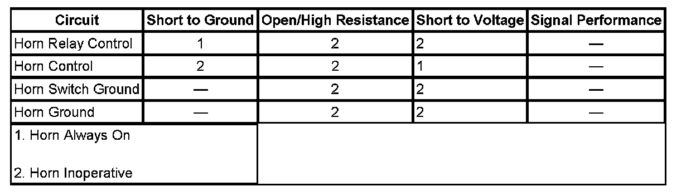

Horns Malfunction
HORNS MALFUNCTION
DIAGNOSTIC INSTRUCTIONS
- Perform the Diagnostic System Check - Vehicle prior to using this diagnostic procedure. Initial Inspection and Diagnostic Overview
- Review Strategy Based Diagnosis for an overview of the diagnostic approach.
- Diagnostic Procedure Instructions provides an overview of each diagnostic category.

DIAGNOSTIC FAULT INFORMATION
CIRCUIT/SYSTEM DESCRIPTION
Battery positive voltage is applied at all times to the horn relay coil and the horn relay switch. Pressing the horn switch applies ground through the switch contacts and the horn relay control circuit to the coil side of the relay, energizing the relay. Battery voltage is then applied through the switch side of the relay, the horn fuse, and the horn control circuit to the horns. The body control module (BCM) may also apply ground to the horn relay control circuit as described above. The horns sound as long as ground is applied to the horn relay control circuit.
DIAGNOSTIC AIDS
If diagnosing a Horn - Poor Tone condition, inspect the following:
- Debris or water in the horn assembly.
- Proper horn mounting hardware torque. Refer to Fastener Tightening Specifications.
- Debris in the joint where the horns attach to the vehicle.
CIRCUIT/SYSTEM TESTING
1. Ignition OFF, connect a test lamp between the HORN fuse test point and ground.
2. Press and release the horn pad. The test lamp should turn ON and OFF when changing between the commanded states.
- If the test lamp does not illuminate or remains illuminated at all times, refer to Horn Switch Circuit Test.
3. Ignition ON, command the horn ON and OFF with a scan tool. The test lamp should turn ON and OFF when changing between the commanded states.
- If the test lamp does not illuminate, test the control circuit terminal 18 at the BCM harness connector C5 for a short to voltage or an open/high resistance. If the circuit tests normal, replace the BCM.
4. Connect a 15A fused jumper wire between the HORN fuse test point and B+. The horn should sound and emit a clear and even tone.
- If the horn does not sound, refer to Horn Circuit Test.
- If the sound emitted is not clear and even, refer to Horn Poor Tone.
Horn Switch Circuit Test
1. Ignition OFF, disconnect the harness connector at the horn switch.
2. Ignition OFF, test for less than 1.0 ohm of resistance between the ground circuit terminal B and ground.
- If greater than the specified range, test the ground circuit for and open/high resistance.
3. Connect the harness connector at the horn switch.
4. Disconnect the harness connector C4 at the underhood fuse block.
5. Connect a test lamp between the control circuit terminal G1 and B+.
6. Press and release the horn pad. The test lamp should turn ON and OFF when changing between the commanded states.
- If the test lamp is always ON, test the control circuit for a short to ground or a sticking horn pad/switch. If the circuit tests normal, replace the BCM.
- If the test lamp is always OFF, test the control circuit for a short to voltage, an open high resistance, or a horn switch which is not closing.
7. Ignition OFF, connect the harness connector at the underhood fuse block. Disconnect the harness connector at the horn.
8. Verify that a test lamp does not illuminate between the control circuit terminal B and ground.
- If the test lamp illuminates, test the control circuit for a short to voltage. If the circuit tests normal, replace the underhood fuse block.
9. If all circuits test normal, test or replace the underhood fuse block.
Horn Circuit Test
1. Ignition OFF, disconnect the harness connector at the horn.
2. Ignition OFF, test for less than 1.0 ohm of resistance between the ground circuit terminal A and ground.
- If greater than the specified range, test the ground circuit for and open/high resistance.
3. Connect a test lamp between the control circuit terminal B and ground.
4. Press and release the horn pad. The test lamp should turn ON and OFF when changing between the commanded states.
- If the test lamp is always ON, test the control circuit for a short to voltage. If the circuit tests normal, replace the underhood fuse block.
- If the test lamp is always OFF and the circuit fuse is good, test the control circuit for an open/high resistance. If the circuit tests normal, test or replace the underhood fuse block.
- If the test lamp is always OFF and the circuit fuse is open, test the control circuit for a short to ground. If the circuit tests normal, test or replace the horn.
5. If all circuit test normal, test or replace the horn.
Horn Poor Tone
1. Ignition OFF, disconnect the harness connector at the horn.
2. Test for less than 1.0 ohm of resistance between the ground circuit terminal A and ground.
- If greater than the specified range, test the ground circuit for a high resistance.
3. Disconnect the harness connector C1 at the underhood fuse block.
4. Test for less than 1.0 ohm of resistance between the control circuit terminal E5 at the underhood fuse block and the control circuit terminal B at the horn.
- If greater than the specified range, test the control circuit for a high resistance.
5. If all circuits test normal, test or replace the horn.
COMPONENT TESTING
Horn
1. Ignition OFF, disconnect the harness connector at the horn.
2. Install a 15A fused jumper wire between the control circuit terminal B and 12 volts. Install a jumper wire between the ground circuit terminal A and ground. Verify the horn emits a clear and even tone.
- If the sound emitted is not clear and even, test or replace the horn.
REPAIR INSTRUCTIONS
Perform the Diagnostic Repair Verification after completing the diagnostic procedure.
- Horn Switch Replacement
- Horn Replacement - Left Side
- Horn Replacement - Right Side
- Underhood Electrical Center or Junction Block Replacement
- Control Module References for BCM replacement, setup and programming. Verification Tests Programming and Relearning